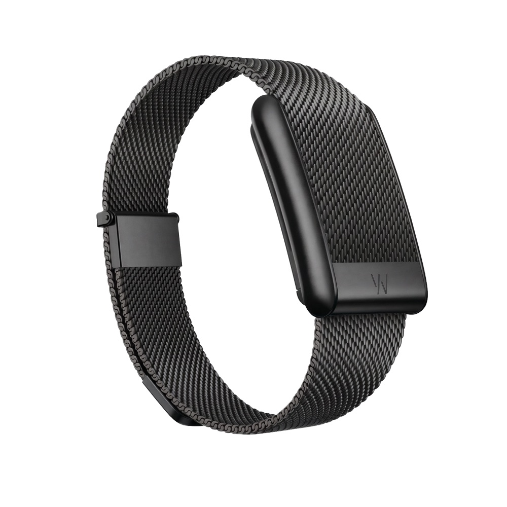

What If the Best Interface Is No Interface at All?
As technology becomes more integrated into everyday life, I'm interested in a different approach to interface design: creating experiences that don't always require our attention.
We're surrounded by screens. Our phones, watches, laptops, and even some household appliances are constantly giving us information or asking for our attention.
As someone interested in UI/UX design, I usually think about how to make those interactions better. But recently, I've become interested in a slightly different question: what if some of those interactions didn't need a screen at all?
It sounds a little contradictory coming from someone who enjoys designing interfaces, but I think it's an interesting direction for technology.
Designing Beyond the Screen
Wearable technology is a great example of this idea.
One product I find particularly interesting is WHOOP, a fitness wearable that tracks health and performance without a traditional screen.

Unlike a smartwatch, WHOOP doesn't try to provide notifications, apps, and everything else you might normally find on your wrist. Instead, it focuses on collecting health data and making that information available through its companion app.
I like this approach because it challenges the idea that more features automatically make a product better.
The device is still providing a service, just without requiring someone to constantly interact with it.
Apple's own watchOS design guidelines encourage brief, meaningful interactions that help people access important information quickly. I think screenless wearables take that principle even further.
Less Interaction, More Intention
Of course, removing a screen doesn't automatically create a better experience.
There are situations where having immediate access to information is important. A runner checking their pace or someone following navigation directions might benefit from a display.
The challenge is deciding when an interaction is actually necessary.
That's what makes this concept interesting from a UX perspective. Instead of starting with what an interface should look like, designers have to think about what information people need, when they need it, and how they should receive it.
Sometimes a vibration, a subtle notification, or even no interruption at all might be the better solution.
Rethinking What Good UX Looks Like
I don't think screens are going anywhere, and I certainly don't think every product needs to become screenless.
But I like the idea of technology becoming more thoughtful about how much attention it asks from us.
As wearables and other connected devices continue developing, I think designers will have more opportunities to create experiences that feel like a natural part of everyday life.
Maybe the goal shouldn't always be to make an interface more engaging.
Sometimes, the best design might be the one that knows when to get out of the way.